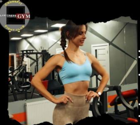
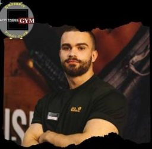

Станіслав
Старший тренер тренажерного залу
Досвід: Стаж особистих тренувань — 23 роки. Тренерський стаж — понад 8 років.
Професійна освіта: Випускник Миколаївської спеціалізованої дитячо-юнацької спортивної школи олімпійського резерву з легкої атлетики; випускник International Fitness School (міжнародна школа фітнесу та дієтології); DNK Fitness School (інструктор 1-2 категорії); Академії фітнесу України. Спеціаліст із реабілітаційного тренінгу та фізичної активності при міжхребцевих грижах.
Досягнення: Майстер спорту з легкої атлетики, призер Чемпіонату України з легкої атлетики. КМС по становій тязі. Багаторазовий чемпіон України з футболу у складі команд МФК Миколаїв та ФК Чорноморець.
- ✔ Набір м'язової маси та збільшення силових показників і витривалості
- ✔ Зменшення відсотка підшкірного жиру
- ✔ Коригування та складання індивідуального плану харчування
- ✔ Реабілітація опорно-рухового апарату та відновлення після травм
- Графік: Понеділок, Середа, П'ятниця — 9:00 - 21:00

Людмила
Персональний тренер / VIP-тренер
Досвід: Стаж особистих тренувань — 8 років. Тренерський стаж — понад 3 роки.
Професійна освіта: Випускниця International Fitness School та Школи фітнесу і дієтології Gogoschool. Має сертифікацію за напрямками: gym trainer, TRX trainer, kids fitness trainer, fitness trainer, stretching trainer.
Орієнтована на індивідуальний підхід до кожного клієнта, розробляє силові та функціональні програми з урахуванням особливостей здоров'я, проводить індивідуальні VIP-тренування.
- ✔ Силові та функціональні тренування (схуднення, набір маси, підтримка)
- ✔ Розрахунок КБЖУ відповідно до потреб та цілей клієнта
- ✔ Рекомендації та індивідуальні корекції по харчуванню
- ✔ Проведення VIP (персональних) тренувань та розтяжка (stretching)
- Графік: Вівторок, Четвер — 16:00 - 21:00, Субота — 13:00 - 18:00 (інші дні за записом)

Кирило
Тренер тренажерного залу
Досвід: Стаж особистих тренувань — понад 10 років. Тренерський стаж — 6 років.
Професійна освіта: Випускник Академії Федерації Бодібілдингу. У своїй роботі використовує виключно науково доведені методи досягнення спортивних цілей.
Досягнення: Бронзовий призер Чемпіонату України з бодібілдингу 2019 року.
Компетентний з питань здоров'я, розшифровки результатів аналізів, повернення в норму показників та покращення загального стану організму.
- ✔ Науково обґрунтовані тренування під ваші завдання (схуднення, набір)
- ✔ Спеціалізація у сфері фармакології та нутриціології
- ✔ Підготовка спортсменів до змагань
- ✔ Контроль показників здоров'я під час навантажень
- Графік: Вівторок, Четвер — 9:00 - 21:00, Субота — 10:00 - 18:00

Віктор
Персональний тренер
Досвід: Стаж особистих тренувань — 26 років. Тренерський стаж — понад 2 роки.
У роботі Віктор використовує колосальний власний практичний досвід та перевірені часом підходи для безпечного досягнення будь-яких цілей, від набору маси до загальної підтримки форми.
Досягнення: З 2004 по 2011 рік входив до складу збірної Миколаєва з армрестлінгу, брав участь у чемпіонатах та кубках України. Активно займається велоспортом протягом 6 років.
- ✔ Силовий тренінг на основі багаторічного спортивного досвіду
- ✔ Побудова персонального плану тренувань під індивідуальні потреби
- ✔ Допомога у наборі маси, схудненні та покращенні тонусу
- ✔ Консультації щодо функціональної витривалості
- Графік: Вівторок, Четвер — 10:00 - 21:00, Субота — 10:00 - 18:00 (інші дні за записом)